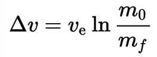
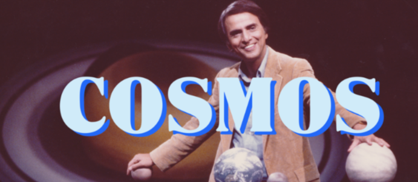

Impending Cosmic Communications
from the long past me:
Stardate 4.22.2026:19.52.30
I am one of the lucky ones who have always been here, or it feels like I have, the only place I have ever truly called home. For four decades now I have creating projects here in the netherspace of data memories, all "tangled up in blue" to quote the illustrious Robert Zimmerman. All those tiny, minute parts woven deep into that spiders web that are the bits and bytes of this home which is everywhere, and no where in between. One day in the future, when the ai's have catalogged everything that is within the reach in virtual space; they will be able to piece together a template of my creations. That old me, often impulsive, never wise, but still leaving behind breadcrumbs of messages, each nestled away in those projects. Though the Internet never forgets, not all of those roads can be found on those maps that linger in the twisted nether-net. Maybe, just maybe they will even get to read all of the little, and large passages, comments, self dictations, angst, self-hatreds, zens, tears. The documented Me. Little pieces of an older me, maybe to an newer me, or to someone else along the way; a gentle reminder of who was to what is, to what was but no longer is. That older me, acting as a time travelling reminder of the cosmic past and future tense, knowing all to well, that along the way, all of those hard lessons should not always be so difficult to future generations.
Yes, the Internet never forgets; but, not all roads can be found on those maps that linger in the netherspace. Some roads, even on the high road, never go back to those homes that are only in our hearts; and this is all the best, especially for little messages of here and forgotten yesterdays along the way.
I do not expect them all to be found, some I suspect, never will, and that is probably for the best, because the younger versions of ourselves are young and stupid.To anyone who tells you that the best lessons in life are free, they are lying. The best lessons take time to learn, to understand, to really find the applicable and measurable instances of those messages. That price is the most expensive we have to pay, "Time, ticking away, the moments that make up a dull day." You think you learn a lesson as a musician and it triggers you to be awe inspiring and perfectly life changing?
No. ‘To play a wrong note is insignificant; to play without passion is inexcusable.’ -- Ludwig van BeethovenPick one. Some of the latter, perfect virtuosos, they lack any type of passion in what they do. Some of the former, well, that is why they call it the blues. All that passion, but far from any measure of perfection. Life is not about perfection, nor is creation.
There is a curse of being a a creative. Umberto Eco called it the "clay of creation, and once you touched that clay, you were ever damned to return to it." I never forgot that, could never forget it, because it etched into me. It did not define me, but, it helped me recognize the why I was as I was, and why others like me are that self-same way. It helped apply a non-ambiguous definition to why we end up the way we are, and in all my years, fewer definitions have been so fitting. As a writer, musician, programmer, that little nagging feeling, you try to put it off, but it eats, gnaws, claws its way forward like some lurking monster; you can try to fight it off, but you know better. It is who you are, just as every writer has to have a dark side, some demonic muse. You can hate it, loathe it, scorn it, apply all the chagrin you want, but it is part of that process. Which do you pick, dark, light, grey? The only answer is "Yes."
It is a shame there are so few of us, dreamers, visionaries, seekers, those ever-explorers as the case were; those of us who can never be satisfied, satiated of that hunger for the clay, horizons, sunsets, stars, spaces, places, even the stars up above. The real tragedy is that is the real limiting factor of humanity, this frail, half false civilization run by misguided fools who lack vision and ideas. As a wise man from LA once said, "all that money for war, but nothing left to feed the poor." The biggest shame of this century and last, is how the education system fosters learners away from science, and all about learning, only to be cogs in a great machine which crushes bone and sinew, using the blood of those dreamers for the great lubrication. So early they are taught that magic does not exist, that math and science are evil bastions, and education is to be feared and scorned, that anything they do not know is just inherently evil. Anyone who tells you magic does not exist, is not your friend. Anyone who says education is evil, you do not need them in your life. There is magic in many places.
"“What an astonishing thing a book is. It's a flat object made from a tree with flexible parts on which are imprinted lots of funny dark squiggles. But one glance at it and you're inside the mind of another person, maybe somebody dead for thousands of years. Across the millennia, an author is speaking clearly and silently inside your head, directly to you. Writing is perhaps the greatest of human inventions, binding together people who never knew each other, citizens of distant epochs. Books break the shackles of time. A book is proof that humans are capable of working magic." [Cosmos, Part 11: The Persistence of Memory (1980)]” ― "Carl Sagan, Cosmos"
"The crux of the biscuit" as the wise Mr. Zappa once said, is what in the hell are you writing all of this here on a Nasa page ?
Long into the future. It dawned on me, near the end of this project, and I had to push to the git and go for a long walk. This message like so many other messagesbin bottles, will remain here long after I am in an urm; well if i cant find a way to have my meat suit kicked off to float into space.
That reason I ended up here, all the ways I was or wouldnbe. My old man. One Henry Edwin Sims, US Air Force.
I was born in the early 70s, 1973 to be exact. Besides making my sister and I breakfast every morning, and so many other things along the way. He was deeply etched into all engineering, much later all things Registered Nurse; always things space. My sister did not care, things of the stars and dreams never inspired her. Much too her loss.
He knew every launch day, I never knew how, but he had every launch time covered. All of them. He would wake me up at dawn or before, those only times I could have Coffee until I was 16. BLack and white tv, and eventually one of those consoles which weighed as much as a car. Best though, the very, very rarely, a Cape Canaveral launch with a North hemisphere window.
Super spectacular dog legged polar trajectory, which would streak North across the eastern seaboard, and all the way up to the north pole, and out into orbit.
I never knew how he knew about those special mornings, or even where to look and the right times, but he did; it was infallible. Those views were simply spectracular, breath taking. Much like Eco's clay of creation, they hung with me. That love would follow me even up til now with Artemis. Had he ever seen a rocket land, he would have likely spontaneously combusted. I know the 1st several times I witnessed it, I was simply aghast at such a thing.
Yes, I am one of those Gen-X who watched that sad day of the Challenger, on TV's all across the country. Many like me were deeply thrown off by this, but some few of us, we maintained that love, that lust for being someplace not here. Some even say that this is why my generation is the way we are. I can argue that either way, but I am on the other way from the majority. I still kept that faint hope, and through the decades, it continued to grow again. Along that road, dozens of deep dives into every section of science I can handle, and some I still have to really push to wrap my feeble brain around. I still have a lust for physics in every field, from Hydrodynamics to Astrophysics, Planck, Newtonian, Field Theory, Cosmology. That love has always been there, and remains. I have known for decades that we humans cannot exist in space for long, but, I would sure like to die there, just to be one of the first few to not die on this over grown chunk of dirt, but someplace elegant, empty, and floaty. Yes, I could handle that and be happy.
So far along the way, we get here, not by what we know, or even thought we knew, but by little nudges in one direction, or by those who show us the way, not always by guiding, but small little eye openings, cracks in doorways, or wind through the keyhole; bread crumbs, wet molding clay, dream seeking, or pre-dawn sights not fit for the eyes of 99.999999% of mortals to ever exist. It is said that the blue planet effect, where you see planet Dirt in all her luster; that it changes you. All those leaders should see that as a mandatory oath of office. We could use more of that. Maybe this is why they make sure no I who understands this will ever be a leader.
Be that as the case may be, Thanks Old man. ~Kelley Edwin Sims A.k.a: Diaz Dizazter
"Shoot for the moon, even if you miss, you'll land among the stars." -- Norman Vincent Peale
"To confine our attention to terrestrial matters would be to limit the human spirit." -- Stephen Hawking
"Imagination will often carry us to worlds that never were. But without it, we go nowhere."" -- Carl Sagan

"Space is for everybody. It's not just for a few people in science or math, or for a select group of astronauts. That's our new frontier out there, and it's up to us to lead it." -- Christa McAuliffe
Nasa : National Aeronautic and Space Administration : Since1959, taking our hopes and dreams to infinity and beyond.